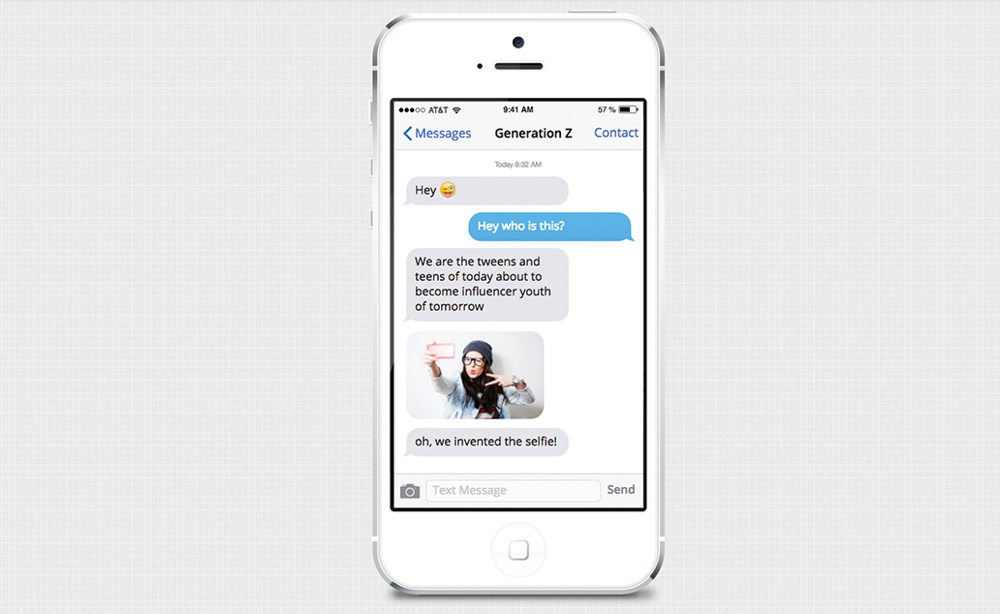
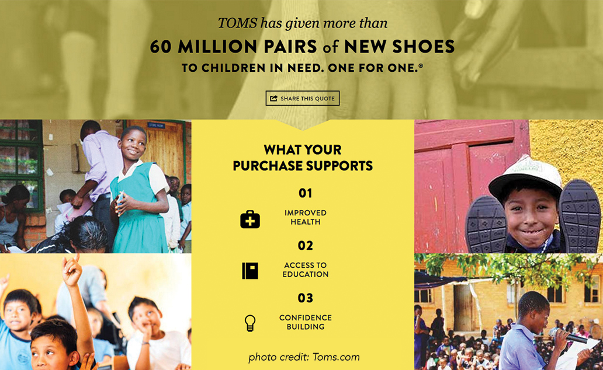

Hello Generation Z – we welcome the 21st century’s first born! For the numerous brands seeking to attract this group; here’s what you need to know about this consumer demographic to position your company for success.
If you were to paint a broad picture of who Generation Z is, it would be this: they’re young, decisive, smart and just a little bit vain with plenty of buying power. In just four short years, this demographic will make up nearly half of the U.S. population. While Generation Z shares some similarities with Millennials, the group has some vast differences too. Particularly in their expectations of brands and how they interact with them. Generation Z is poised to make a big impact on the consumer buying space.
Who Is Generation Z?
Loosely characterized as those born after the mid-nineties, Gen Z is maturing in a world where the veil of normalcy has been pulled off. As a result, today’s teens appear to be more level-headed and realistic about the world they live in compared to previous generations. Analysis from the Cassandra report shows that:
- 71 percent of Gen Z respondents expect to experience significant failure before achieving success
- 40 percent say they see failure as an opportunity to try again
Just like generations before them, Gen Z’s world view has been shaped by incredible political and historical events. This generation is growing up in a post-9/11 world. They’ve felt the impact of The Great Recession; watched the unfolding of corporate scandals including Lehman Brothers, Bernie Madoff, Volkswagen and Turing Pharmaceuticals (to name just a few). They have witnessed the legalization of same-sex marriage along with the nomination of America’s first black president and subsequent nomination of its first female presidential nominee.
What Generation Z Cares About
Consequently, Gen Z thirsts for honesty, candor and social good. Nearly 80 percent of teens surveyed by sparks & honey reported that they are concerned about world hunger; children around the world dying of preventable disease and man’s impact on the planet. It’s no wonder they prefer to shop with brands that exhibit some sense of corporate social responsibility.
Gen Z is also one of the most open and accepting when it comes to gender and racial equality. This is the generation that’s given rise to terms like “gender fluid” and “gender queer”. Notable Gen Zers like Kristen Stewart, Miley Cyrus and Ruby Rose are emerging as role models for a generation that eschews labels when it comes to gender and sexuality.
They’ve also grown increasingly diverse and tolerant of different races and ethnicities—and will expect as much from the brands they support. By 2020, more than half of American children are expected to be part of a minority race or ethnic group. A figure that is slated to grow as time passes.
The Generation Z Consumer
How much buying power does a Gen Zer really have? JWT Intelligence reports $44 billion annually. This group’s purchasing power extends to their parents’ buying decisions as well. About 93% of Gen Z parents say their children have at least some sway on their family’s spending, including:
- Apparel
- Electronics
- Entertainment
- Toys
It’s estimated that Gen Z spends one in ten of their dollars online. In fact, access to internet is huge when it comes to this generation. Considered the most connected, Gen Z is used to accessing what they need on-the-go. No surprise since nearly three quarters of American teens ages 13 to 17 have smartphones and go online daily.
“Generation Z and Millennials, the digital natives, are voracious consumers of media, and mobile phones are at the center of their lives,” said Megan Clarken, executive vice president, Nielsen Global Watch Product Leadership in Nielsen’s Age of Technology survey. “For younger consumers, the mobile phone is no longer just for use on the go, but everywhere—even their living rooms. Content providers and advertisers need to be flexible with their approaches in order to reach consumers where they are, on the device they are using and during the activities in which they participate.”
Gen Z’s extreme connectivity gives them access to a global community, which they actively engage in—and rely on when it comes to making purchasing decisions. That word-of-mouth pipeline is one of the reasons review sites like Yelp, Zagat and TripAdvisor are so popular—and will be increasingly important to brands.
Not only do Gen Zers look to the internet to discern quality, but it’s made them increasingly aware of other people’s opinions. Almost to a fault, as a Generation Z Entrepreneur Patrick Finnegan puts it in a recent interview with uinterview.com:
“We’re part of a social media generation, so we [want to] look good on social media. When we post a picture… It’s so we get likes on our Instagram. We actually aren’t genuinely as caring as millennials were. We still have that social change aspect to us, but at the same time if that photo can make us look good on social media… I would say it’s about validation.”
What Can Brands Do?
Navigating the Gen Z consumer space may seem like a lot to take on, but luckily millennials have been priming you for the last few years. Just like millennial consumers, Gen Z expects an omnipresent approach to their shopping experience. Nearly 90 percent of teens ages 13 to 17 have or have access to a desktop or laptop computer, and 58% of teens have or have access to a tablet computer (Pew Research Center). Their interaction doesn’t end online either; many Gen Zers will research a brand or a product online, then visit a retail store to make a purchase.
4D is the new norm. Gen Z has been texting, swiping and chatting their whole life. For brands wanting to connect with them, it’s imperative that they have a robust online and offline experience. Immersive and interactive experiences are a must, including:
- Emojis
- Symbols
- Images
- Video
- Live Stream

Living in a highly digital, multi-screen, real-time environment has its drawbacks. By 15 years-old, most Gen Zers will consume at least 200,000 marketing messages. Perhaps, this is why their average attention span is just eight seconds. So, it pays to know where they’re hanging out online and catch them in the moment. It’s typical for this demographic to spread themselves across various social media platforms from YouTube and Snapchat to Facebook and Instagram.
Take a Transparent Approach
Gen Z is characterized by its desire for corporate responsibility and social inclusiveness. Branding that embraces love, diversity, respect, and positivity are more likely to get their attention. Advertisements that feature a range of ethnicities, body shapes, and sizes are more likely to resonate with Gen Zers, since it’s a closer reflection of the reality they’re living in.
Make Social Work
Encourage conversation and suggest that your consumers leave reviews. It’s critical that your social media game is on point. Be sure to respond quickly to consumer feedback and take a proactive approach to any negative reviews. Invest in social listening software to help you keep tabs on the discourse surrounding your products/services.

Find ways to give back. Brands that embrace Gen Z’s mission to do good in the world stand a better chance of earning their trust and loyalty. Find a theme they care about like the environment, poverty, equal rights, etc. and turn that into a cause you stand behind too. Then, make a genuine effort to support it.
It’s not too soon to start thinking about ways to reach this important demographic. While Millennials might have considered these features an impressive nicety; Gen Z will look to it as the norm.